- 하루질문
- 체크리스트
- 익명채팅

 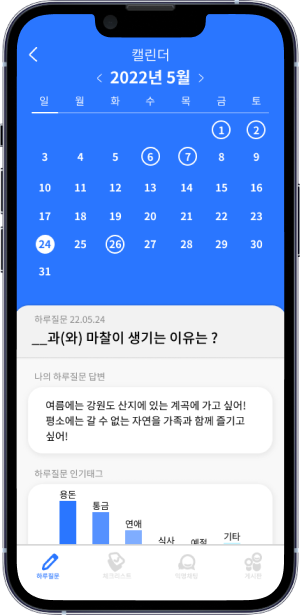
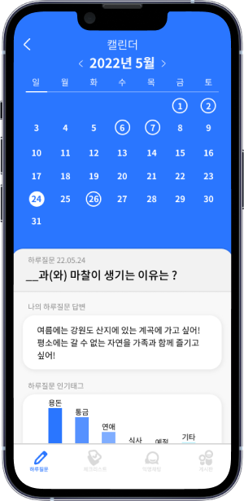

 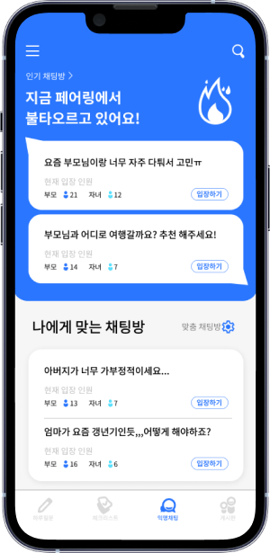
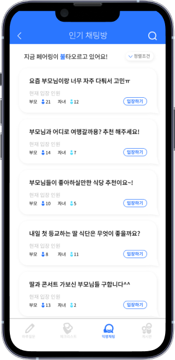
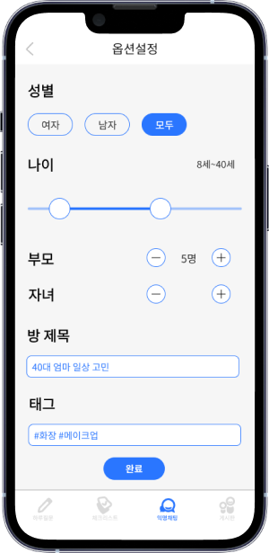
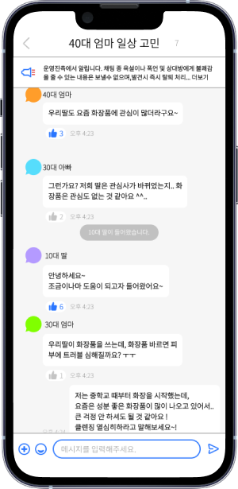
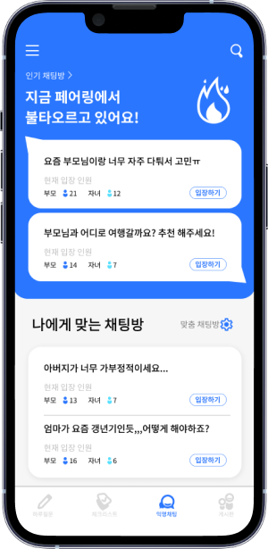
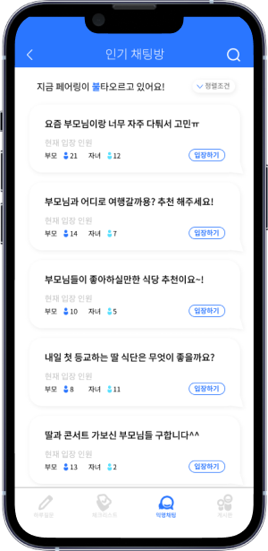
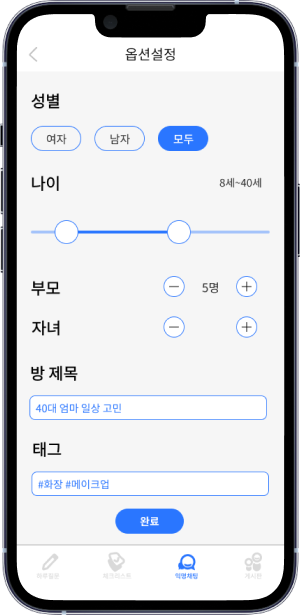
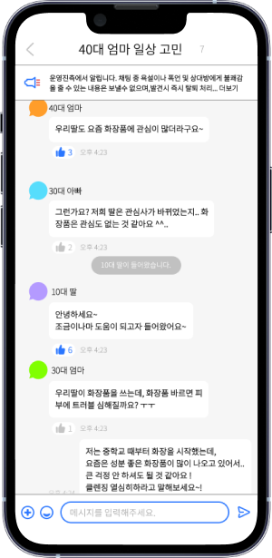
 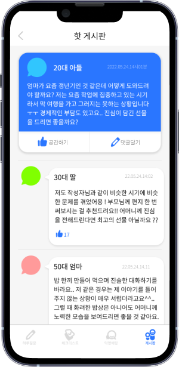
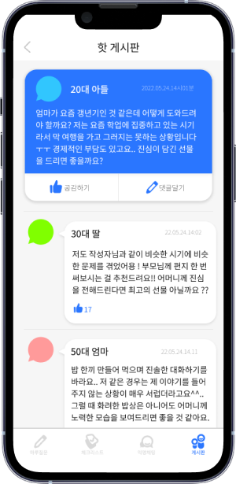

하루질문으로
부모-자녀의 이야기를
하루마다 제공되는 질문에 답변해봐요.
다른 부모-자녀의 의견을 보고 참고 또는 이해할 수 있어요.
풀어!
하루질문
나와 다른 생각 에서
해시태그를 통해 원하는 답변이나
실시간 인기태그를 확인할 수 있어요.
실시간 답변을 통해 다른 부모-자녀들의
이야기도 들어볼 수 있어요.
해시태그를 통해 원하는 답변이나
실시간 인기태그를 확인할 수 있어요.
실시간 답변을 통해 다른 부모-자녀들의
이야기도 들어볼 수 있어요.
캘린더 에서
오늘의 답변이나 다른 날을 선택해
해당 날짜의 기록도 확인할 수 있어요.
해당 날짜의 인기 태그를 확인해
나의 답변과 비교할 수 있어요.
오늘의 답변이나 다른 날을 선택해
해당 날짜의 기록도 확인할 수 있어요.
해당 날짜의 인기 태그를 확인해
나의 답변과 비교할 수 있어요.
체크리스트로
부모-자녀의 거리를
하루씩 오늘 하루를 되돌아볼 수 있는 리스트를 체크해봐요.
체크리스트는 부모-자녀가 더 가까워질 수 있게 도움을 줘요.
줄여!
체크리스트
하루체크 에서
접속일 또는 나의 소통 레벨을 확인하거나
4가지의 주제를 통해 부모-자녀에게
도움을 줄 수 있는 리스트를 제공해요.
접속일 또는 나의 소통 레벨을 확인하거나
4가지의 주제를 통해 부모-자녀에게
도움을 줄 수 있는 리스트를 제공해요.
익명채팅으로
부모-자녀의 고민과 갈등을
익명으로 구성된 부모-자녀들과 채팅해봐요.
다향하지만 본인이 원하는 주제로 대화할 수 있어요.
날려!
익명채팅
인기채팅방 에서
불 타고 잇는 HOT한 상위 채팅방과
순서대로 배치된 채팅방을
마음대로 선택 후 입장할 수 있어요.
현재 입장 인원을 제공하고 있어
부모 또는 자녀의 수를 확인할 수 있어요.
불 타고 잇는 HOT한 상위 채팅방과
순서대로 배치된 채팅방을
마음대로 선택 후 입장할 수 있어요.
현재 입장 인원을 제공하고 있어
부모 또는 자녀의 수를 확인할 수 있어요.
맞춤채팅 에서
본인에게 맞는 채팅방을 옵션 설정을 통해
방을 개설할 수 있어요.
옵션 설정에는 성별, 나이, 인원, 태그까지
다양한 설정을 통해서 원하는 주제로
원하는 부모-자녀와 소통 가능해요.
본인에게 맞는 채팅방을 옵션 설정을 통해
방을 개설할 수 있어요.
옵션 설정에는 성별, 나이, 인원, 태그까지
다양한 설정을 통해서 원하는 주제로
원하는 부모-자녀와 소통 가능해요.
채팅방 에서
나이대와 부모-자녀를 확인할 수 있어요.
공감 버튼을 통해
대화를 하면서 공감할 수도 있어요.
나이대와 부모-자녀를 확인할 수 있어요.
공감 버튼을 통해
대화를 하면서 공감할 수도 있어요.
채팅방 에서
부모-자녀의 사진을 눌러
프로필을 확인할 수 있어요.
공감한 수, 소통 레벨, 조회수, 접속일을
확인할 수 있으며
해당 부모-자녀의 신뢰도가 높아져요.
부모-자녀의 사진을 눌러
프로필을 확인할 수 있어요.
공감한 수, 소통 레벨, 조회수, 접속일을
확인할 수 있으며
해당 부모-자녀의 신뢰도가 높아져요.
게시판으로
부모-자녀의 공감을
나이대와 부모와 자녀 두가지만 구분되는 익명 서비스로
공감을 주고 받으며 소통하고 인기 주제는 무엇인지 확인해봐요.
높여!
게시판
핫게시판 에서
제일 인기있는 글들을 확인하거나
공감할 수도 있고 댓글을 달 수 있어요.
자유롭게 부모-자녀 서로 대화를 하면서
공감 버튼을 통해 해당 주제가
얼마나 이슈인지 확인할 수 있어요.
제일 인기있는 글들을 확인하거나
공감할 수도 있고 댓글을 달 수 있어요.
자유롭게 부모-자녀 서로 대화를 하면서
공감 버튼을 통해 해당 주제가
얼마나 이슈인지 확인할 수 있어요.
공감 등급 게시판 에서
평소에 받은 공감들이 누적되어
그 수만큼 공감 등급이 정해져요.
공감 등급은 총 5가지 등급이며,
본인 등급에 맞게 자동으로 배치돼요!
평소에 받은 공감들이 누적되어
그 수만큼 공감 등급이 정해져요.
공감 등급은 총 5가지 등급이며,
본인 등급에 맞게 자동으로 배치돼요!